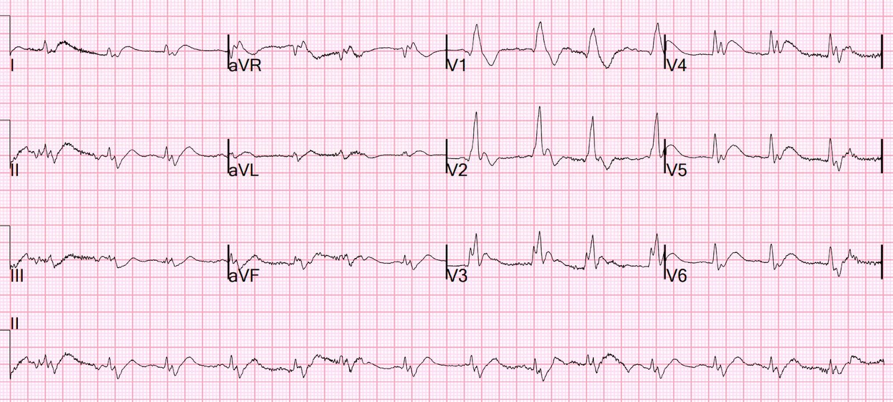
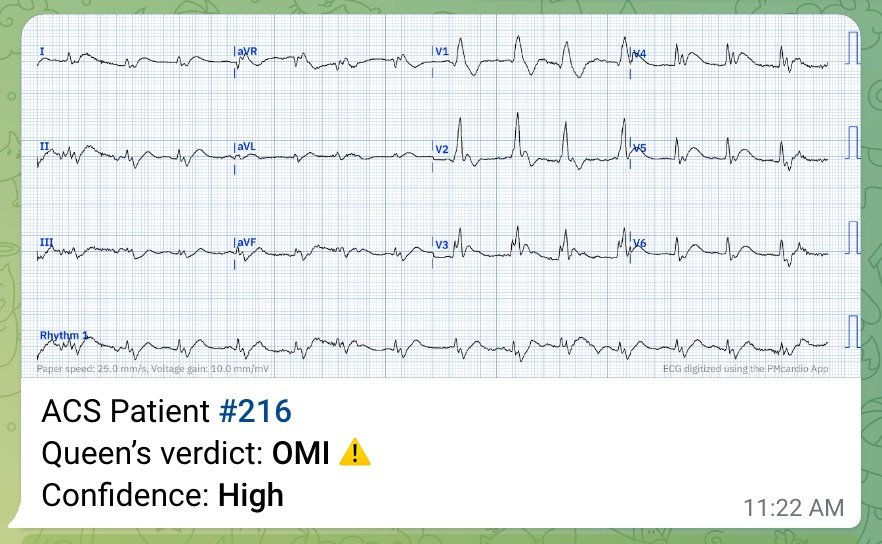
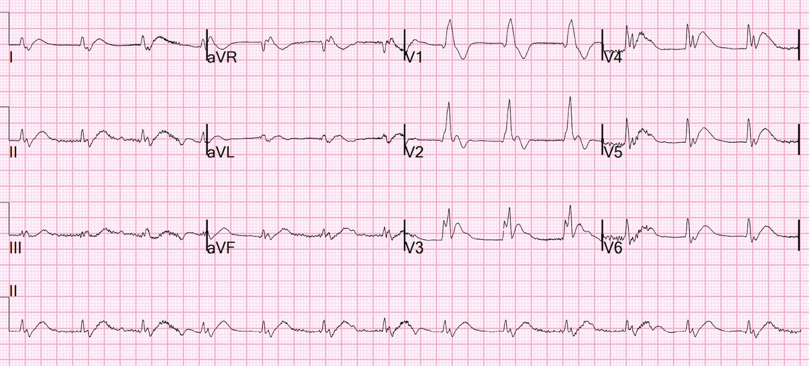
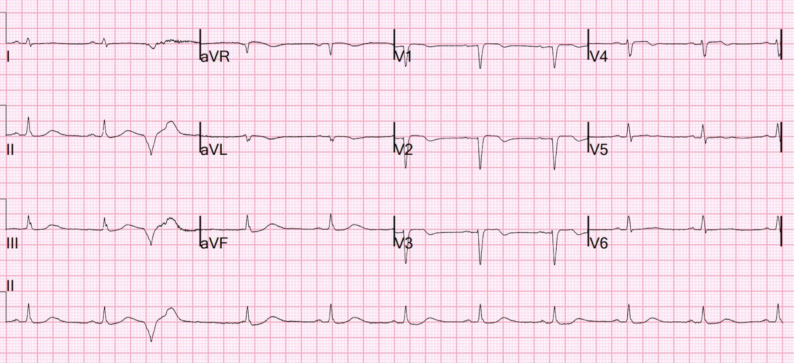
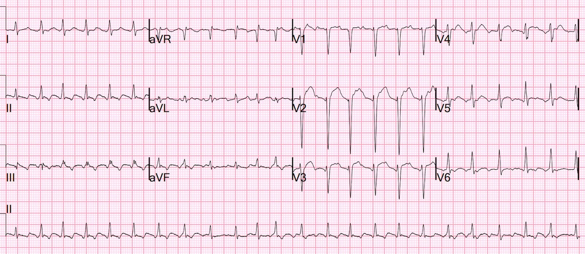
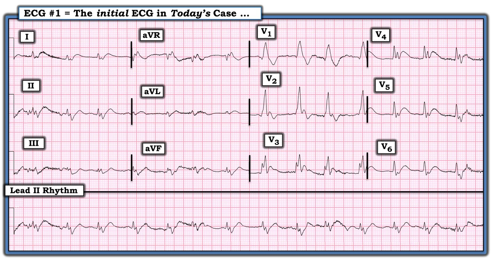
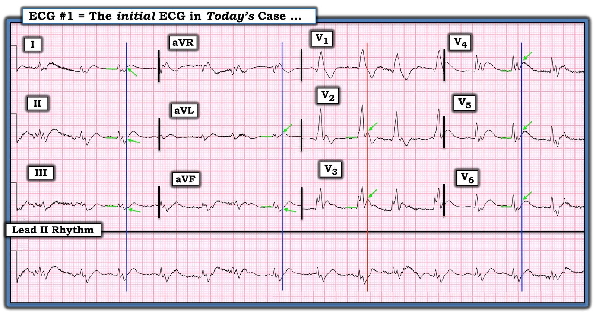

14/07/2023 — Bệnh nhân ở độ tuổi 40 nhập viện trong tình trạng rung thất dai dẳng sau khi đã được cố gắng hồi sức trước viện
Bản dịch tiếng Việt của bài "A 40-something presented after attempted prehospital resuscitation with persistent Ventricular Fibrillation" – Dr. Smith’s ECG Blog. Giữ nguyên toàn bộ 8 hình ảnh của bản gốc.
Bệnh nhân ở độ tuổi 40 bị rung thất dai dẳng nhập viện sau khi đã được cố gắng hồi sức trước viện
Một bệnh nhân ở độ tuổi 40, không có tiền sử bệnh tim, đến khoa cấp cứu (ED) trong tình trạng rung thất dai dẳng sau khi đã được cố gắng hồi sức trước viện. Bệnh nhân tiếp tục được hồi sức theo chuẩn, NGOẠI TRỪ việc chúng tôi dùng thiết bị ngưỡng hít vào (Inspiratory Threshold Device) (ResQPod) VÀ áp dụng khử rung tuần tự kép (dual sequential defibrillation) (điều này đơn giản là chúng tôi dán 2 bộ miếng dán, dùng 2 máy khử rung, và khử rung bằng cả hai máy, mỗi lần khử rung chỉ cách nhau một phần nhỏ của một giây.
Hai can thiệp gần đây đã được chứng minh qua các thử nghiệm ngẫu nhiên là cải thiện sống còn với chức năng thần kinh tốt trong ngừng tim: 1) phối hợp ResQPod và ResQPump (thiết bị hút dùng cho hồi sinh tim phổi ép–giãn chủ động — Lancet 2011) và 2) khử rung tuần tự kép.
Cuối cùng, hồi sinh tim phổi tư thế nâng đầu (head-up CPR) (không được dùng ở ca này) giúp hồi sức tốt hơn. Thực tế, tốt nhất là nâng đầu từ từ trong khi hồi sức, và việc này có thể thực hiện bằng thiết bị Elegard. Các thử nghiệm không ngẫu nhiên cho thấy kết cục tốt hơn (sống còn với chức năng thần kinh tốt) khi dùng thiết bị này; xem bài báo này trên tạp chí Resuscitation: Head and Thorax Elevation during cardiopulmonary resuscitation using circulatory adjuncts is associated with improved survival (Nâng đầu và ngực trong hồi sinh tim phổi kết hợp các phương tiện hỗ trợ tuần hoàn liên quan đến cải thiện sống còn).
Bệnh nhân đạt tái lập tuần hoàn tự nhiên (ROSC) và duy trì được.
Một điện tâm đồ 12 chuyển đạo được ghi:


Bạn nghĩ gì?
Diễn giải của tôi là: RBBB kèm sóng T tối cấp ở V4-V6, gần như chẩn đoán tắc LAD, cần phân biệt với thiếu máu cục bộ sau ROSC.
Tôi đã gửi điện tâm đồ này cho Queen of Hearts (PMcardio OMI), và đây là phán quyết:
(Queen không được cung cấp bất kỳ dữ liệu lâm sàng nào; Queen không biết bệnh nhân có đau ngực hay không và không biết đã có ngừng tim; mọi phán quyết đều dựa trên xác suất tiền nghiệm của bệnh nhân đau ngực):


Chúng tôi ghi thêm một điện tâm đồ 8 phút sau để xem có thoái lui gì không:


Sóng T thậm chí còn tối cấp hơn.
Vì vậy chúng tôi kích hoạt phòng thông tim (cath lab)
Chụp mạch vành:
Nhận định và khuyến nghị:
Thủ phạm gây nhồi máu cơ tim ST chênh lên thành trước và ngừng tim ngoài bệnh viện do rung thất của bệnh nhân là tắc do huyết khối ở đoạn giữa LAD
Troponin đầu tiên chỉ tăng nhẹ ở mức 36 ng/L (giới hạn trên tham chiếu (URL) = 35)
Trong nghiên cứu của chúng tôi về troponin ban đầu trong STEMI, 26,8% có hs-cTnI ban đầu dưới 52 ng/L (mức có giá trị tiên đoán dương (PPV) cao đối với nhồi máu cơ tim típ 1 — OMI hoặc NOMI)
Troponin đạt đỉnh trên 36.000 ng/L (dĩ nhiên là nhồi máu cơ tim rất rộng)
Điện tâm đồ sau PCI vào ngày hôm sau:


Trông giống nhồi máu cơ tim thành trước gần như đã hoàn tất, mặc dù đã tái tưới máu nhanh chóng.
Siêu âm tim chính thức:
Kích thước và bề dày thành thất trái bình thường.
Chức năng tâm thu thất trái giảm mức độ vừa, phân suất tống máu (EF) ước tính 36%.
Rối loạn vận động thành khu trú – vô động vùng trước mỏm, vùng trước vách đoạn giữa, vùng vách mỏm và vùng dưới mỏm.
Bệnh nhân có diễn tiến lâm sàng bất ổn nhưng đã tỉnh lại với chức năng thần kinh nguyên vẹn.
Diễn tiến bất ổn đó bao gồm cuồng nhĩ với đáp ứng thất nhanh (RVR):



===================================
BÌNH LUẬN CỦA TÔI, bởi KEN GRAUER, MD (14/7/2023):
===================================
Luôn thật xứng đáng khi “cứu sống được một ca!” — như ca hôm nay, trong đó bệnh nhân ở độ tuổi 40 bị rung thất (VFib) dai dẳng, tiếp theo là một diễn tiến kéo dài và phức tạp — cuối cùng đã sống sót với chức năng thần kinh nguyên vẹn!
Lời cảm ơn:
Tôi hoàn toàn thừa nhận những lần lúng túng của mình khi cố đọc điện tâm đồ ban đầu trong ca hôm nay, được ghi sau ROSC. Vì lý do này — tôi nghĩ việc xem lại điện tâm đồ ban đầu này là đáng làm — tôi đã đưa lại nó trong Hình 1.
Trước hết — Đôi điều suy nghĩ về điện tâm đồ sau hồi sức.
- Như tôi đã nhấn mạnh trong Bình luận của tôi ở cuối trang của bài ngày 10 tháng Mười năm 2022 trên Dr. Smith’s ECG Blog — Việc đọc điện tâm đồ sau hồi sức có thể cực kỳ khó khăn. Đó là vì rất thường gặp các dấu hiệu điện tâm đồ của thiếu máu cục bộ dưới nội tâm mạc lan tỏa, hoặc thậm chí ST chênh lên dương tính giả ngay sau hồi sức (đó là lý do nhiều người khuyên nên chờ một khoảng thời gian ngắn [ ~15 phút] sau ROSC — rồi ghi lại điện tâm đồ để xem các thay đổi thiếu máu cục bộ có còn tồn tại không).
- Ví dụ — Baldi và cs. ghi nhận số điện tâm đồ dương tính giả với STEMI tăng hơn gấp đôi nếu nhận định dựa trên các bản ghi 12 chuyển đạo sau hồi sức được ghi sớm hơn 7 phút sau ROSC (Resuscitation 162:445-446, 2021).
- Một lý do MẤU CHỐT khác khiến việc đọc các bản ghi sau ROSC trở nên khó khăn — là thường xuyên thiếu mọi thông tin bệnh sử (tức là, Nhiều bệnh nhân sau khi được hồi sức thành công sau ngừng tim không tỉnh lại ngay — nên việc có đau ngực hay các triệu chứng khác trước ngừng tim hay không thường là không biết được).
- Cuối cùng — Điện tâm đồ của bệnh nhân ngừng tim thường bất thường rõ rệt, thậm chí kỳ dị. Nhiều bệnh nhân trong số này có sẵn bệnh mạch vành và các dạng bệnh tim nặng khác. Bản thân cơn ngừng tim (đặc biệt nếu thời gian hồi sức kéo dài) — có thể gây biến đổi sâu sắc hình dạng QRS, gồm cả các rối loạn dẫn truyền bất thường, kèm những thay đổi tái cực khó dự đoán. Chẳng lạ gì khi các bản ghi sau hồi sức lại khó đọc đến vậy.
Điều gì khiến tôi lúng túng với điện tâm đồ ban đầu của ca hôm nay:
Hãy XEM LẠI Hình 1 — bản ghi ban đầu của ca hôm nay.
- Phức bộ QRS kết thúc Ở ĐÂU?
- Những sóng lệch nào biểu hiện “phân mảnh” QRS?
- Ở mỗi chuyển đạo, điểm J nằm ở đâu? (là điểm mà từ đó ta đánh giá có ST chênh lên hay chênh xuống?).


CÁCH TRẢ LỜI các câu hỏi trên:
Với tôi — MẤU CHỐT để đọc bản ghi sau hồi sức ban đầu trong ca hôm nay — là làm theo lời khuyên mà BS. Meyers & Smith thường đưa ra để đánh giá độ lệch đoạn ST khi có hình dạng vây cá mập (Shark Fin) — “Khi QRS rộng, điểm J sẽ ẩn. Vì vậy, bước tiếp theo của bạn là kẻ nó xuống (Trace it down), rồi chép nó sang (Copy it over)”.
- Để biết thêm về cách áp dụng kỹ thuật Kẻ xuống; Chép sang (Trace-down; Copy-over) này với độ lệch đoạn ST dạng vây cá mập — Xem Bình luận của tôi trong bài ngày 19 tháng Năm năm 2020 trên Dr. Smith’s ECG Blog.
- Đối với bản ghi hôm nay — Mặc dù hình dạng QRS trong bản ghi hôm nay không hẳn là “vây cá mập” — nguyên tắc đánh giá độ lệch đoạn ST vẫn như nhau (tức là, “Kẻ xuống; Chép sang”). Tôi nghĩ một chuyển đạo trong điện tâm đồ #1 cho thấy ranh giới rõ giữa điểm kết thúc của phức bộ QRS và điểm bắt đầu của đoạn ST — là chuyển đạo V1. Vì vậy tôi đã “kẻ xuống” một đường thẳng đứng màu ĐỎ song song với đúng điểm đánh dấu kết thúc phức bộ QRS ở chuyển đạo V1.
- Mọi thứ ở bên phải đường thẳng đứng màu ĐỎ này đánh dấu điểm bắt đầu của đoạn ST. Kẻ xuống theo đường ĐỎ này tới dải nhịp chuyển đạo II dài được ghi đồng thời — sẽ đánh dấu cho chúng ta điểm kết thúc của QRS phân mảnh ở chuyển đạo II dài.
- Giờ đây khi đã xác định được điểm kết thúc của QRS trông như thế nào trên dải nhịp chuyển đạo II dài — việc còn lại chỉ là “chép sang” điểm kết thúc này cho 3 nhóm chuyển đạo ghi đồng thời còn lại — rồi kéo các đường thẳng đứng lên trên (tôi đã vẽ bằng các đường màu XANH LAM) để xác định điểm kết thúc của QRS ở 9 chuyển đạo còn lại.
Tổng hợp lại tất cả:
Phức bộ QRS ở điện tâm đồ #1 cho thấy phân mảnh rõ rệt (tức là, các khía “thêm” quá mức trên QRS — thấy ở bên trái các đường thẳng đứng màu ĐỎ và XANH LAM trong Hình 2). Nhìn lại — chính sự phân mảnh quá mức thấy ở không dưới 10/12 chuyển đạo này đã khiến tôi lúng túng trong lần đầu cố gắng đánh giá độ lệch ST-sóng T.
- Theo Dr. Smith — có RBBB ở điện tâm đồ #1 (phức bộ qR, dương ưu thế ở chuyển đạo bên phải V1 — kèm sóng S tận rộng [dù bị phân mảnh] ở các chuyển đạo bên I và V6).
- Tôi nghi ngờ còn có blốc phân nhánh trái trước (LAHB), do QRS âm ưu thế ở từng chuyển đạo dưới (dù đánh giá này trở nên khó khăn vì phần cuối QRS ở các chuyển đạo này phân mảnh quá mức).
- ST chênh lên dưới dạng sóng ST-T tối cấp thấy ở các chuyển đạo I, aVL; và ở các chuyển đạo V2 đến V6 (như được chỉ bởi các mũi tên XANH LỤC đánh dấu điểm J ở các chuyển đạo này).
- ST chênh xuống soi gương thấy ở ít nhất 2 trong số các chuyển đạo dưới = chuyển đạo III và aVF (thay đổi này có thật nhưng kín đáo, do biên độ phức bộ QRS ở các chuyển đạo này nhỏ).
- ĐIỀU CỐT LÕI: Theo Dr. Smith — Dấu hiệu RBBB/LAHB + sự phân bố của các đoạn ST tối cấp và chênh lên, bắt đầu sớm ngay từ chuyển đạo V2 — kèm ST chênh xuống soi gương ở thành dưới — được củng cố bởi sự tồn tại kéo dài của các dấu hiệu này trên điện tâm đồ ghi lại 8 phút sau — gợi ý tắc LAD đoạn gần cấp cho đến khi chứng minh được điều ngược lại.

